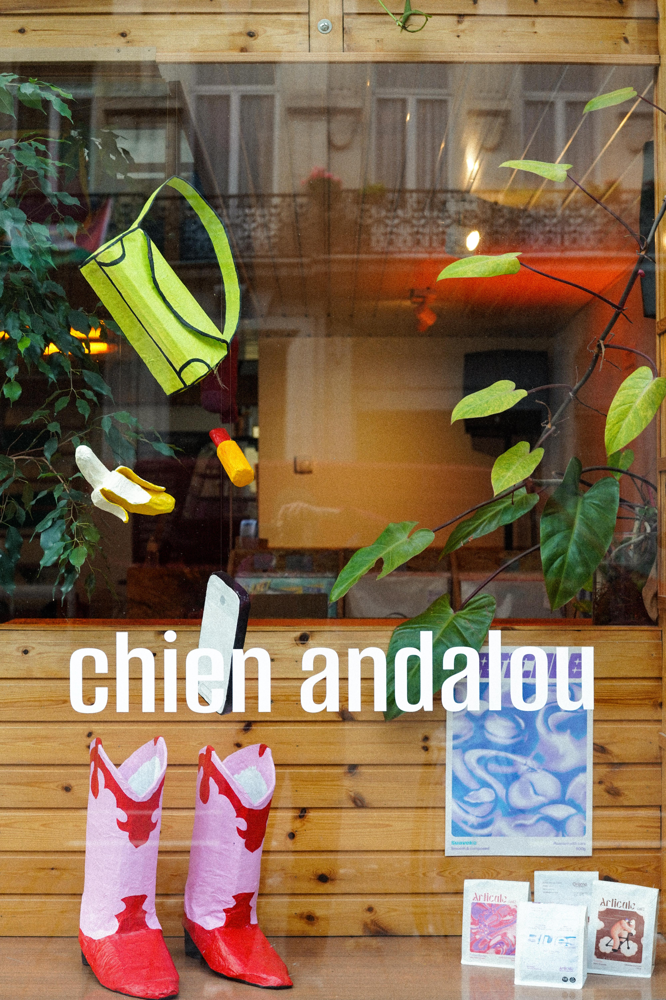
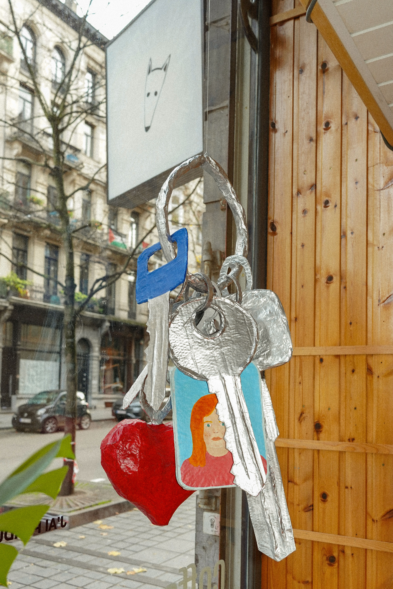
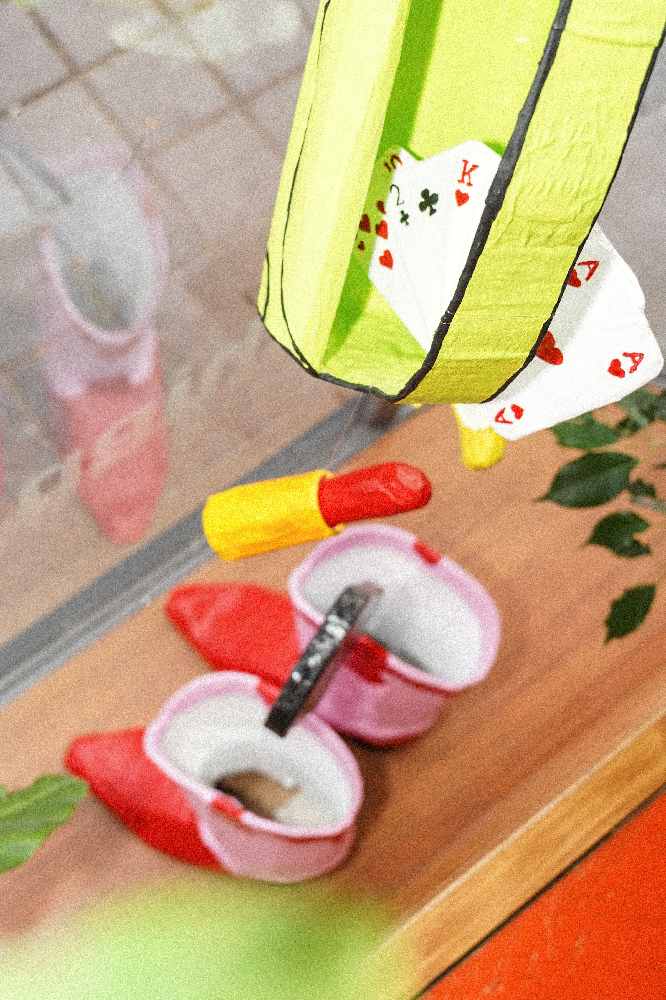
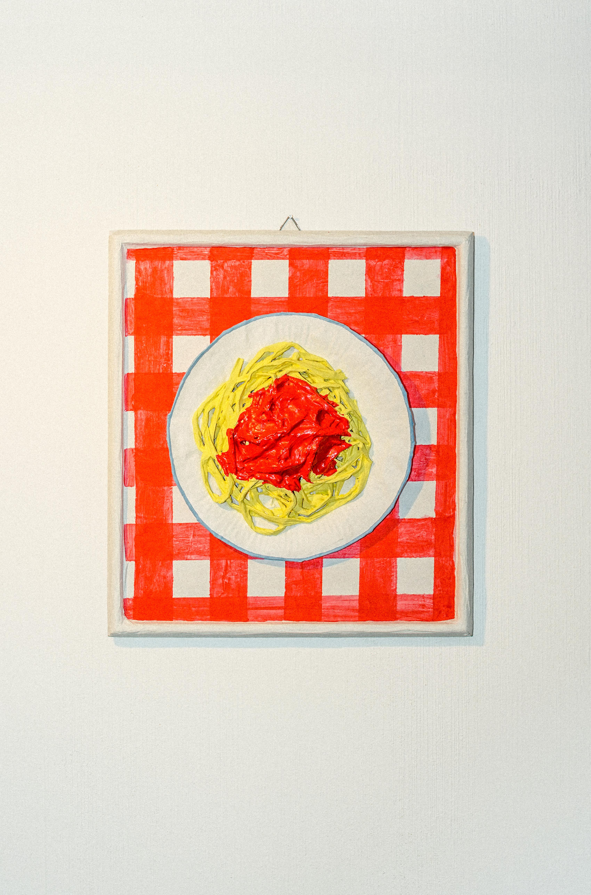
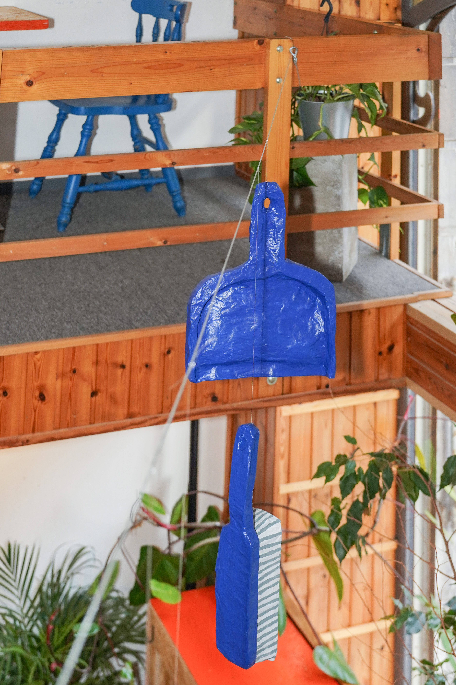
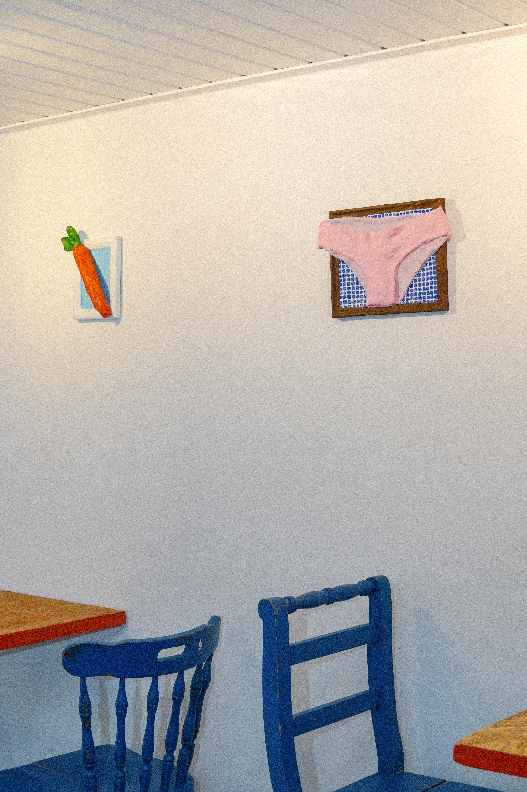
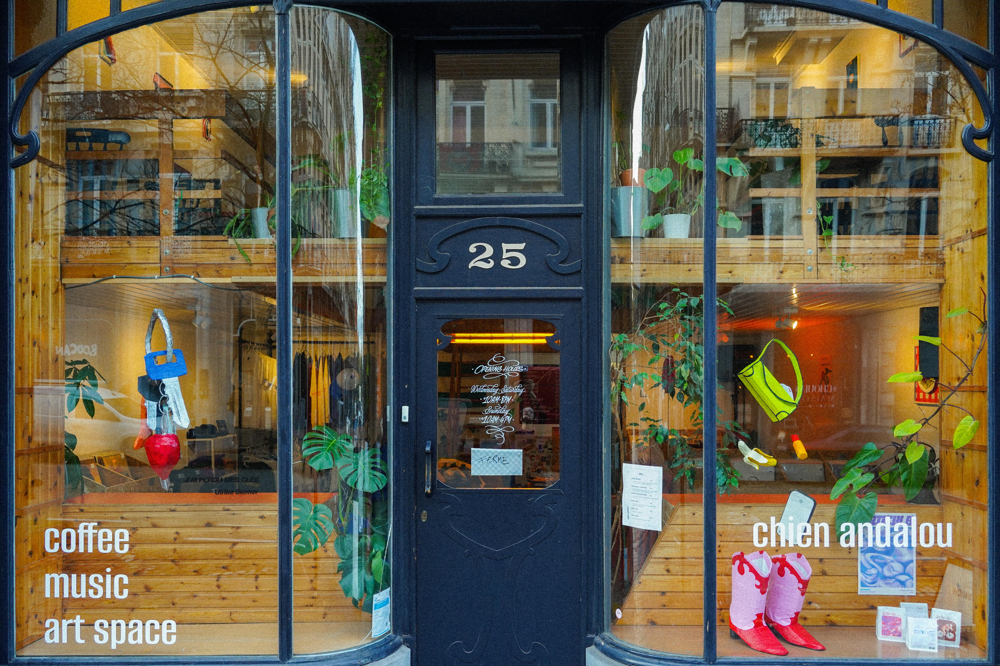
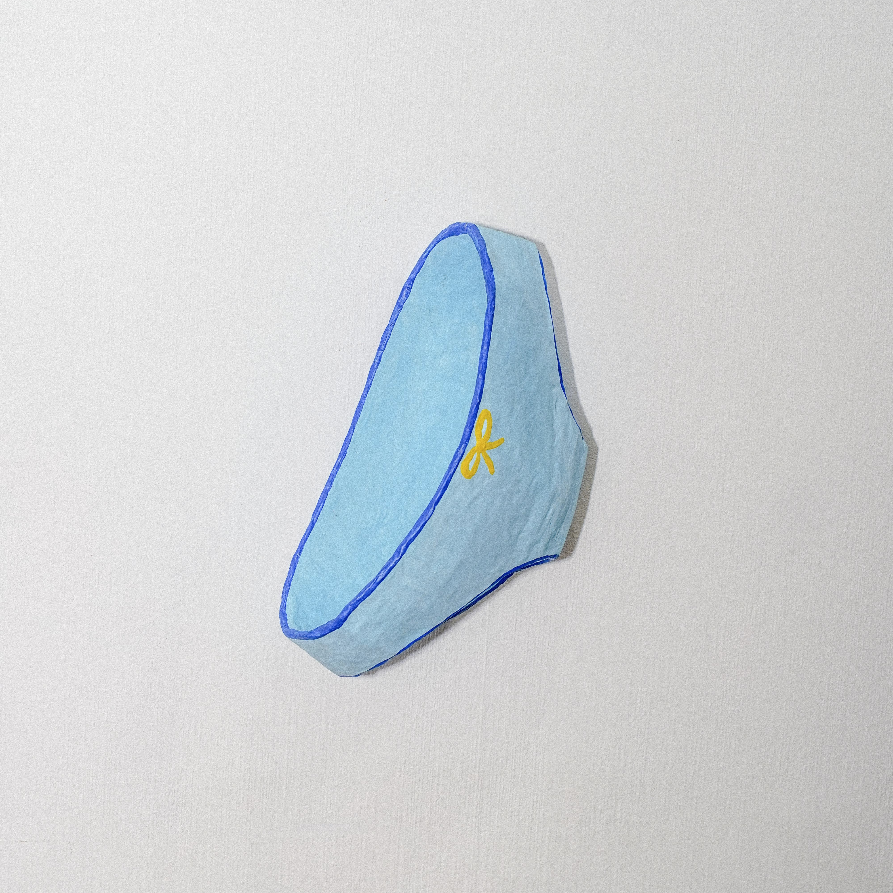
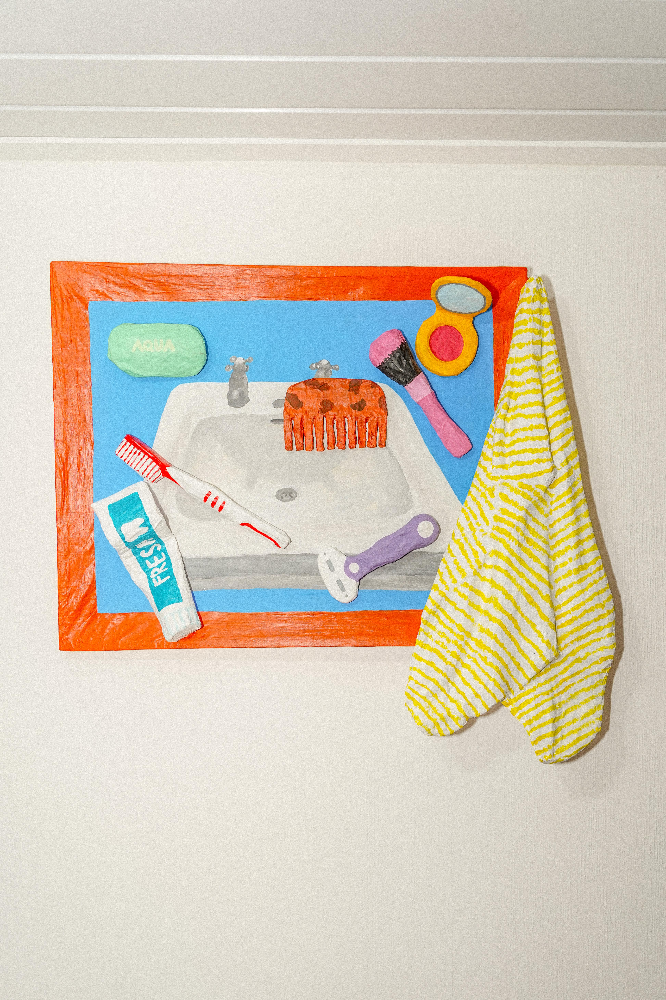

I’ve lost my keys. Have you ever lost your keys, eaten pasta with tomato sauce and ended up with an orange mouth, smoked a Marlboro, cracked an egg, or danced in pink cowboy boots? An exhibition highlighting everyday gestures and objects inviting viewers to reconnect with their own memories. Solo exhibition at Chien Andalou, Brussels.








